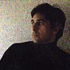

|  | Ara Oshagan is a self-taught free-lance photojournalist. He came across photography in the mid 90's and almost immediately began an obsessive photo-documentation of the Armenian Diaspora of Los Angeles. The photos on display here are a selection from that project, focussing on the world of children. Ara can be reached at araosh@aol.com. |